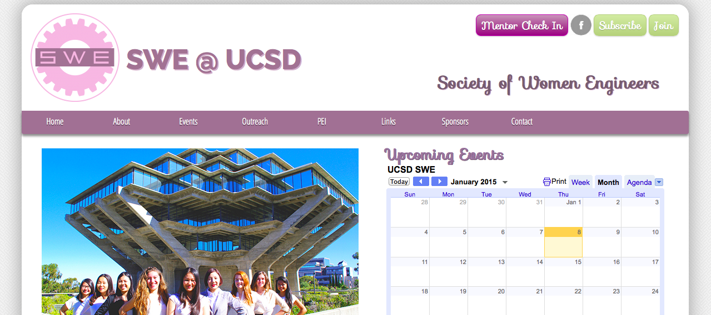

For CAT 125, we were required to create a website
that told a story. I thought that it would be
interesting to attempt to tell a story through
my resume. I used Bootstrap and jQuery Lightbox
to code the site. Visit the active site
here.

Society of Women Engineers Website
- 2013
I revamped SWE's website from scratch, and
integrated a slideshow for the images
(pictured left), as well as jQuery Lightbox.
Though the site is no longer maintained by me,
it is still active
here.